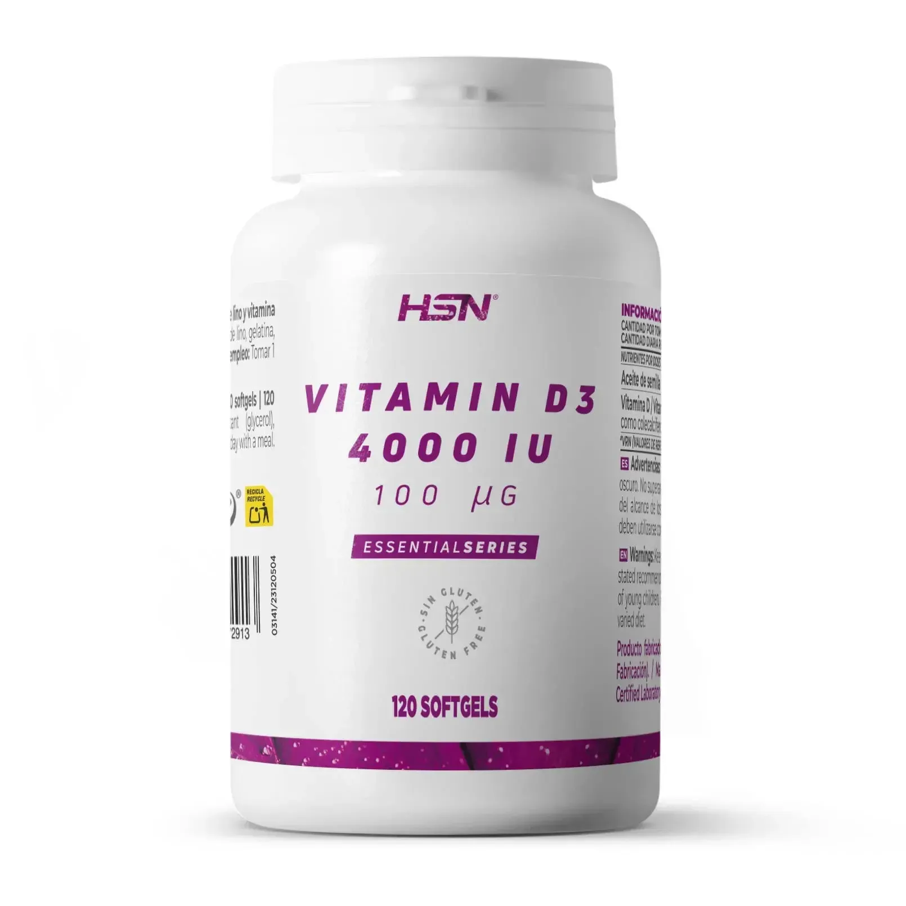

Suplementación
Análisis detallado de los suplementos con mayor respaldo científico actual. Optimiza tu rendimiento basándote en evidencia, no en marketing.

Creatina Monohidrato
Mejora la producción de ATP, la fuerza y el rendimiento en ejercicios de alta intensidad.
VER EN HSN
Omega-3 (EPA y DHA)
Reduce la inflamación y favorece la recuperación muscular y articular tras el ejercicio intenso.
VER EN HSN
Vitamina D3
Niveles adecuados se asocian con una mejor función inmunológica y recuperación ósea.
VER EN HSN